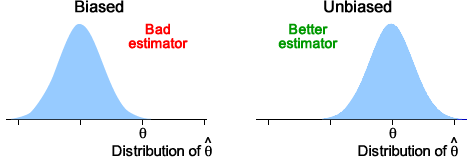
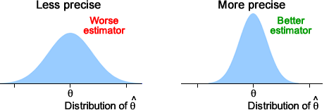

A good estimator's distribution should have a mean that is equal to (or at least be close to) the parameter being estimated,

However this is not enough to characterise a good estimator.

A good estimator should also have a distribution with a small standard deviation.
Definition
The standard error of an estimator \(\hat{\theta}\) of a parameter \(\theta\) is defined to be its standard deviation.
The standard error is also the standard deviation of the estimation error,
\[ error \;\; = \;\; \hat{\theta} - \theta \]and this is the reason for its name — it is a 'typical' estimation error.
Question: Active ingredient in medicine
Pharmaceutical companies routinely test their products to ensure that the concentration of active ingredient, \(\mu\), is within tight limits. However the chemical analysis is not precise and repeated measurements of the same specimen differ slightly.
One type of analysis gives estimated concentrations of the active ingredient that are normally distributed with standard deviation \(\sigma = 0.0068\) grams per litre. A product is tested 16 times, giving a sample mean concentration of \(\hat{\mu} = \overline{x} = 0.0724\) grams per litre.
(Solved in full version)
The formula for the standard error often involves unknown parameters, so its exact numerical value cannot be obtained. These parameters are often replaced by estimates in order to get a numerical value for the standard error.
Question: Heat treatment of mangoes
In an experiment to assess the effectiveness of heat-treatment of mangoes as a method of killing fruit fly eggs and larvae, several infested fruit were heat-treated at 44°C. Out of 572 fruit fly eggs in the mangoes, 30 survived, giving an estimate of the probability of survival at this temperature of:
\[ \hat{\pi} = P = \frac {30} {572} = 0.05245 \]What are the bias and standard error of the estimator?
(Solved in full version)